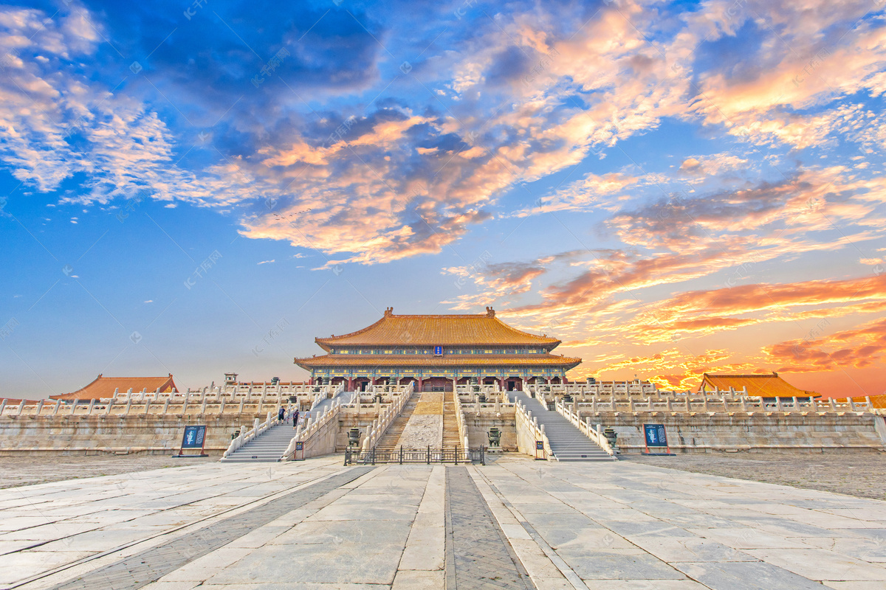
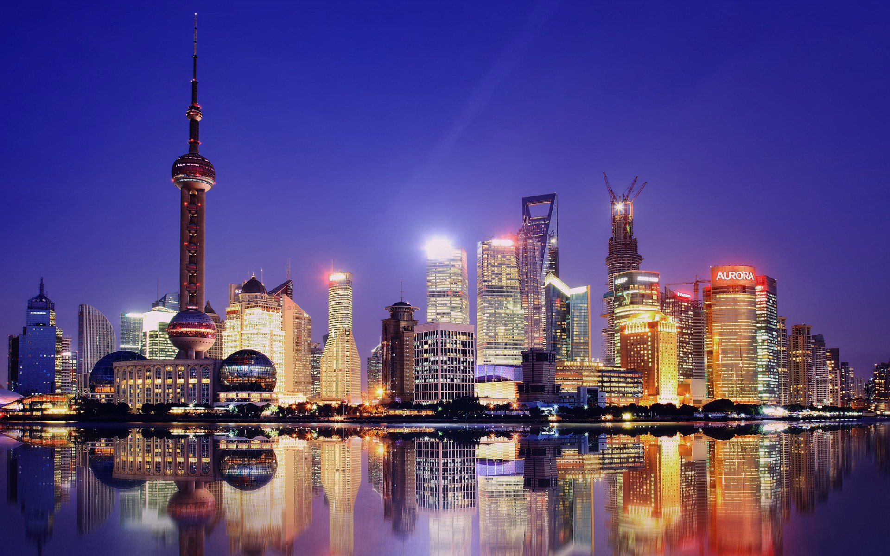
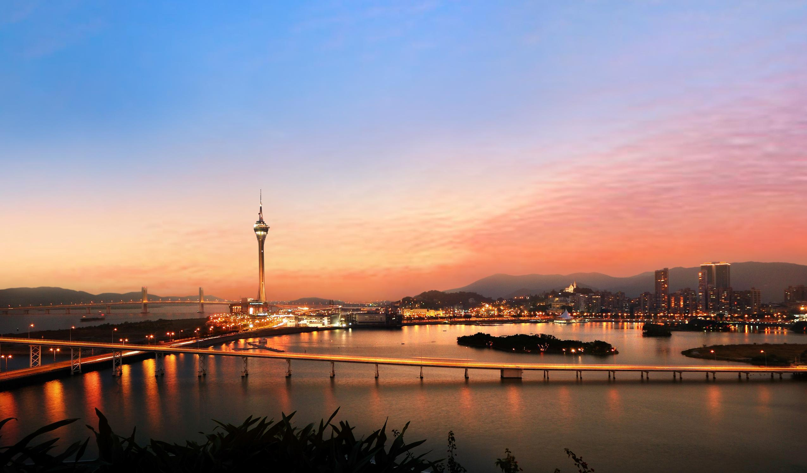

回到首页
北京(点击图片查看旅游景点）
北京市（Beijing），简称“京”，古称燕京、北平，是中华人民共和国首都、直辖市、国家中心城市、超大城市，国务院批复确定的中国政治中心、文化中心、国际交往中心、科技创新中心， 中国历史文化名城和古都之一。
上海(点击图片查看旅游景点）
上海市，简称“沪”，别称申城、沪上、魔都，是中华人民共和国直辖市、国家中心城市、超大城市、上海大都市圈核心城市，中华人民共和国国务院批复确定的中国国际经济、金融、贸易、航运、科技创新中心，中国历史文化名城。
香港(点击图片查看旅游景点）

香港是一座高度繁荣的自由港和国际大都市，与纽约、伦敦并称为“纽伦港”，是全球第三大金融中心，重要的国际贸易、航运中心和国际创新科技中心，也是全球最自由经济体和最具竞争力城市之一，在世界享有极高声誉，被GaWC评为世界一线城市第三位。
澳门(点击图片查看旅游景点）
澳门特别行政区是直辖于中央人民政府的一个地方行政区域 [85] ，实行资本主义制度，是国际自由港、世界旅游休闲中心、世界四大赌城之一，也是世界人口密度最高的地区之一，其轻工业、旅游业、酒店业和娱乐场使澳门长盛不衰，成为全球发达、富裕的地区之一。